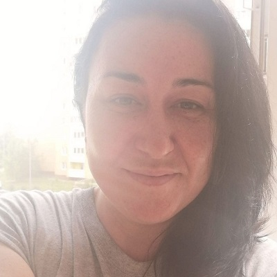

Початок

Народилася я 1981 року у столиці України і прожила там до 2012р., а вже тоді переїхала до маленького мальовничого міста Вишгород. Маю чудового чоловіка, з яким я найщасливіша у всесвіті!
Також у нас є кіт, за паспортом він Абрикос (прошу не плутати з Персиком)))). Паралельно він має ще кілька прізвиськ, а саме:
Також у нас є кіт, за паспортом він Абрикос (прошу не плутати з Персиком)))). Паралельно він має ще кілька прізвиськ, а саме:
- Абрам Моїсейович
- Кракозябрік
- Пухнаста булочка
- Шерстяне гівно, коли він:
- волає як скажений
- дере диван
- спить на халаті чоловіка, або ж:
- капцях чоловіка
- чистих попрасованих футболках чоловіка
- в робочому кріслі чоловіка
- будь-чому, чого торкався чоловік)))
- скаче як мустанг, збиваючи на своєму шляху все!
Навчання та робота
Навчання
-
Київський національний торговельно-економічний університет
Отримала ступінь спеціаліста з менеджменту зовнішньоекономічної діяльності. Чудовий заклад, знання нам не падали з неба. Головне чому нас там вчили - це ВЧИТИСЯ.
-
Ліцей №100 "Поділ"
В ліцеї закінчила 10 та 11 класи, отримала срібну медаль (фізика і хімія трохи підкачали))))
- Загальноосвітня школа №245
Робота
Працювала я на дуже різних посадах - бухгалтером, бізнес-тренером, менеджером у банку, очолювала відділ в компанії з управління активами (це фондовий ринок, але він майже рухнув під час кризи 2008 року), навіть в агентстві нерухомості довелося попрацювати. Тепер я буду працювати розробником )))
Хобі
- Моя головна пристрасть - це приготування їжі. Я дуже люблю готувати як давно відомі (навіть всесвітньо) страви, так і експериментувати (шкода, часом, викинутих продуктів, але частіше експерименти вдаються). В нас вдома часто бувають українські вареники, італійська лазанья та навіть тайська смажена павутинка (вермішель) з куркою або креветками
- Дуже люблю музику. Раніше мої плей-листи нагадували людину "не при собі", зараз це здебільшого метал
- Танці - це ще одна моя пристрасть. Коли ми виженемо всю погань зі звоєї землі - я обов'язково знову буду ходити на дискотеки або на свята, які дуже часто проходили у нашому місті до повномасштабного вторгнення
- Спробувала алмазну мозаїку і не могла зупинитися! Маю в колекції вже 4 величезні картини
- Зараз вперше в житті малюю картину за номерами, теж виходить круто!
P.S. Прочитала це все і подумала - Боже, яка я талановита))))
Ну, і нарешті фото кота )))